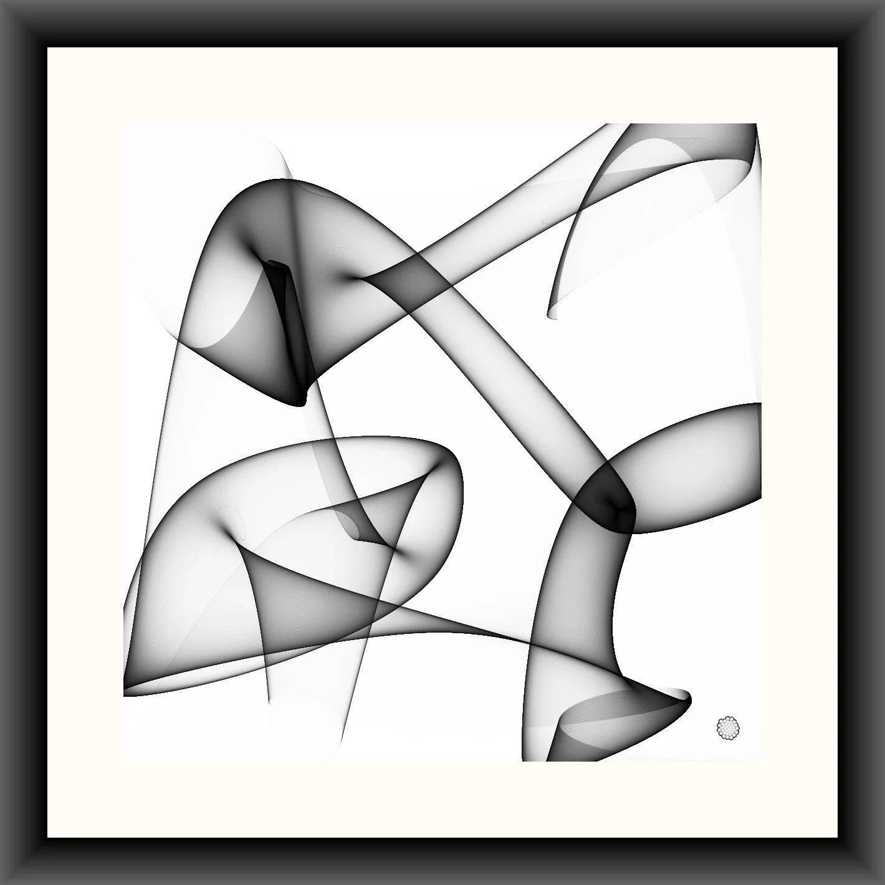
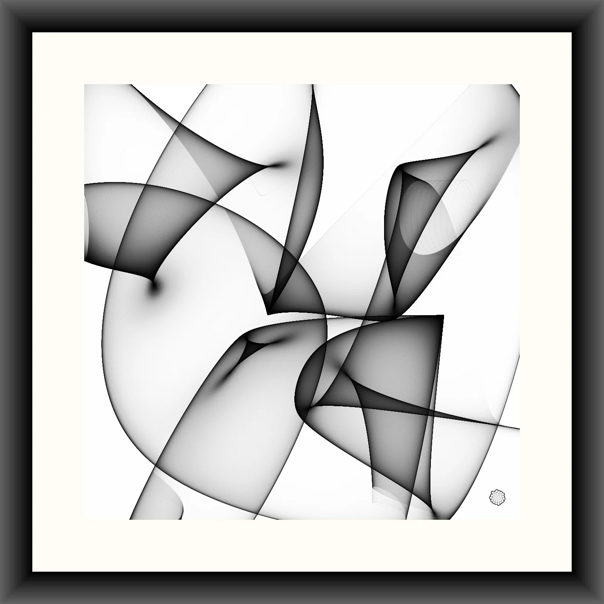

Sv
Sv
 En
En
Upplagor
Struktur
I grunden skapas varje verk av en matematisk algoritm. Bilden du ser i gråskala nedan utgör verkets komposition, det vill säga den underliggande struktur som koden genererat.

Färg
Vidare färgläggs strukturen utifrån en färgskala och det färdiga verket uppstår. En kombination av en specifik struktur och en specifik färgskala trycks och säljs endast i ett enda exemplar.
Samma grundstruktur kan förekomma i andra färgserier (som exemplen ovan), men två helt identiska tryck framställs aldrig. Varje fysiskt tryck är därmed unikt i sitt specifika utförande.
Slump
Vissa verk genereras med hjälp av slumptal, medan andra är helt bestämda från start. Bilden nedan utgår från exakt samma algoritm som den ovan, men har ett nytt slumpmässigt utfall.
Verk som bygger på slump har alla en unik struktur. Samma algoritm kan skapa flera besläktade, men aldrig identiska, strukturer. Verk som inte använder slump kallas fasta strukturer och genererar alltid exakt samma motiv.
